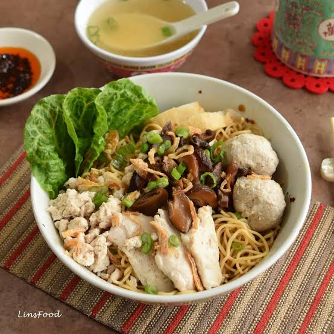

Bak Chor Mee
Home

Description
Bak Chor Mee (minced meat noodles) is an iconic Singaporean hawker dish featuring springy egg noodles (either thin mee kia or wide mee pok) served dry or in a rich umami soup.
Ingredients
- Minced pork (marinated with light soy sauce, sesame oil, and pepper)
- Sliced lean pork
- Chopped spring onions
- Braised shiitake mushrooms
- Noodles
- Chinese black vinegar
- Sambal chilli
- Light soy sauce
Steps
- Prepare toppings
- Mix sauces together
- Cook ingredients
- Cook noodle and assemble